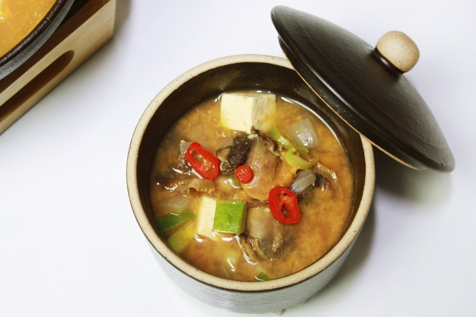

Soy bean paste soup is the most common home-cooked dish based on soybean paste.
This dish is made with the traditional Korean soybean paste as a base.
Soy bean paste is made by fermenting soybeans and is a nutritionally very healthy food.
People all over the world have the idea that Koreans are skinny.
Since Koreans eat a lot of fermented foods,
they are usually skinny even though they eat a lot of soup.
I added recipe on this section. You can find by clicking word
"Soy bean paste soup"
(It was wrote by Korean)
